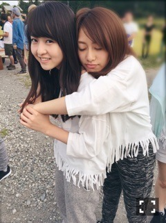

| 2015/10 07 Wed | ネズミとマングース 。670回目 |
13thシングル
「今、話したい誰かがいる」
ミュージックビデオ公開されました。
良い景色で、みんなで
ほのぼのしながらの撮影。
ダンスレッスン頑張ってたよ〜
MV完成したの見て、
普通に感動してしまった〜
良い曲です。
主題歌である映画
『心が叫びたがってるんだ。』
まだ観ていません(T . T)
試写会が稽古と重なったため、、
主題歌が発表される前から
チェックしていた映画なので、
時間つくって早く観なきゃ〜！

サビ前の歌割一緒の3人
他には、
cw曲「ポピパッパパー」
他の星からメンバーで「隙間」
このユニットは3曲目になります！
大好きなユニット＼(^o^)／
この機会に、ぜひ
「僕が行かなきゃ誰が行くんだ？」
も聴いてほしい！
そして、今回の特典映像は個人PV。
もろもろお楽しみに〜
.........
発売中の月刊MdNの連載
BODYSONG.デザイナー、
乃木坂の衣装デザイナーの
青木俊典さんと対談＼(^o^)／
表題曲の何度目の青空か？や
命は美しいの他に
生まれたままで、ここにいる理由
自分にとって思い入れ深い曲の
衣装も青木さんでした。
私の好きな曲である
別れ際、もっと好きになるの衣装も。
生まれたままでの時に
はじめましてだったのですが、
MV撮影の時点で
目をつけておりました！！
見え隠れするBODYSONG.の生地が
スタイリッシュで本当に可愛くて
いつも惚れ惚れしています。
その生地を贅沢に衣装に使ってるのが
個人的に嬉しいんだ。
スタイリストの市野沢さんとの
コンビすごく好きです！
これからもお世話になります。
片想いや咄嗟の衣装デザイナーの
尾内さんと岡崎さんにも
お話聞きたいなあ（＾∇＾）
衣装ってわくわくするよね。
可愛いのたくさん着れて幸せ。

舞台『すべての犬は天国へ行く』
昨日で折り返し。
クレメンタインクレメンタインクレメンタインクレメンタイン
まりか
コメント(514)
2015/10/07 22:00